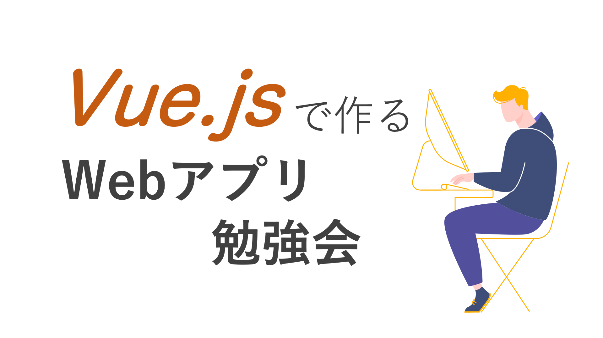
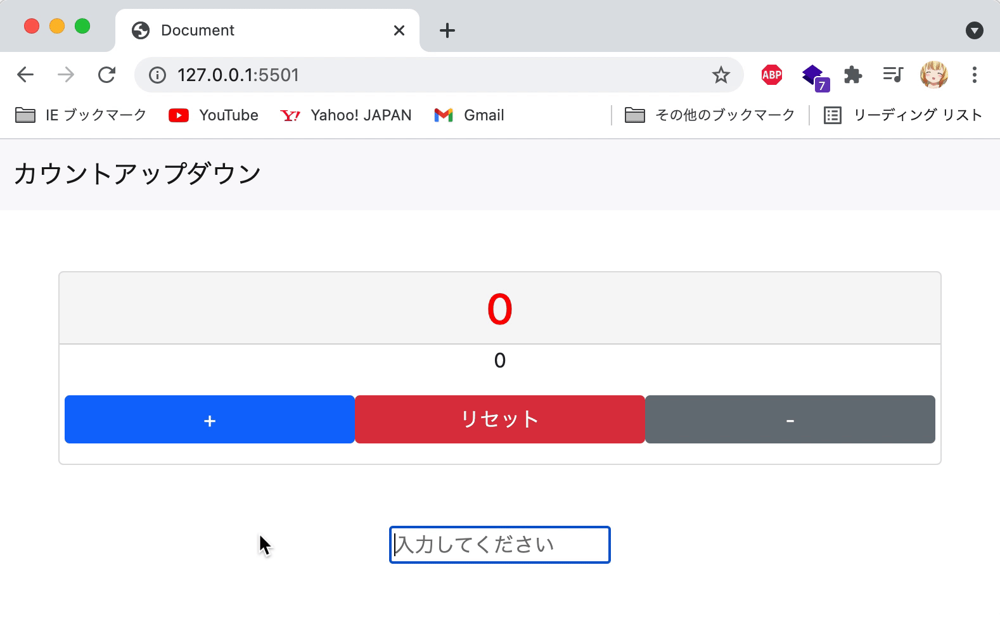
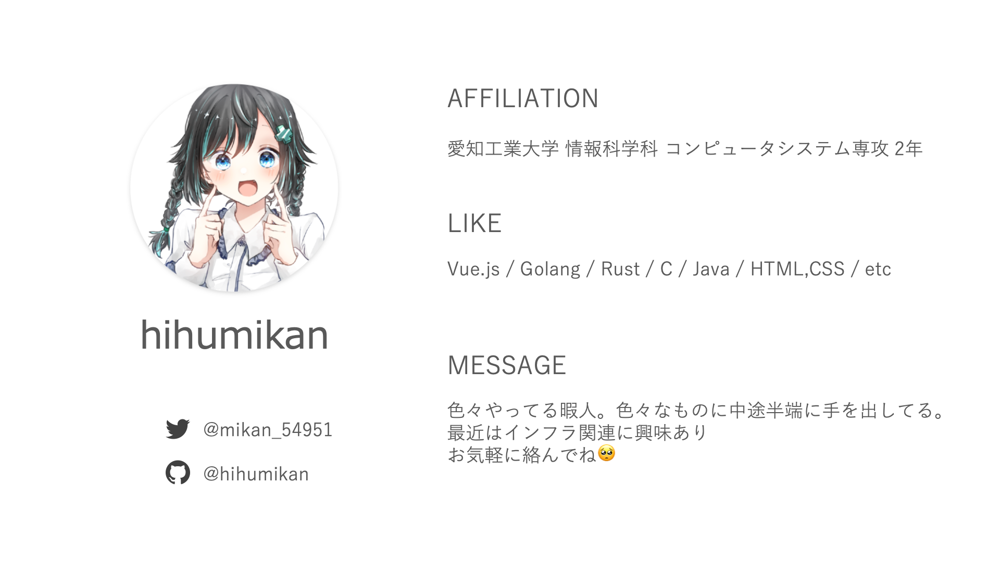
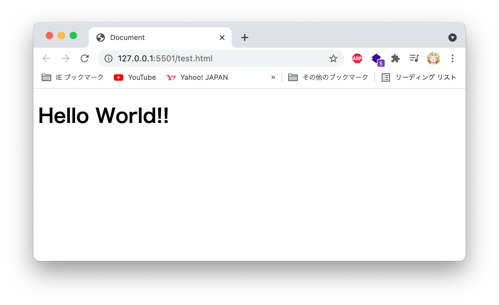
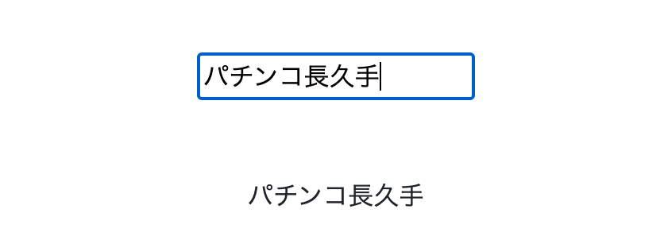

✅ Webアプリの大体の作り方の流れ
✅ Vueをなんとなく理解
❌ Vueの細かい機能や説明
❌ 他のフレームワーク、言語の比較
❌ HTML/CSS/vanilla jsの説明


※資料間違ってたらごめんなさい！
スマホやパソコン上で表示されているWebサイトは大体、HTML/CSS/JavaScriptの３つの技術が用いられます。大まかにHTMLでWebページを作成し、CSSで見た目をデザイン、動きの部分でJavaScriptといった役割を持っています。
Webサイトを公開するだけならばHTMLとCSSで十分ですが、「クリックした時にメッセージを表示させたい」「このツイートにいいねしたい」「画像が入れ替われるようにしたい」などに、JavaScriptはよく利用されます。
つまり、クリックによって色々変えたいとかプログラミングっぽいことをするならJavaScriptは必要になるということです。
今回の勉強会のテーマとなっているVue.jsはそのJavaScriptのフレームワークとなっており、通常のJavaScriptよりも少ないコードで開発出来たり、簡単に保守が出来たりするなど時間的コストを大幅に短縮出来るものです。
最近のWebアプリケーションの開発ではVue.jsが多くの企業で使われ、今人気のフレームワークとなっています。学習コストの低さもあるため、この機会にVue.jsを触ってみましょう。
※Vue.jsを使っているサイト一例
他にも、Vue.jsに対抗するライブラリやフレームワークなどがあり、ReactやAngular、JQuery、Svelteなどが存在します。今回の勉強会ではそれらの説明は割愛させて頂きますが、興味があったら調べてみてね。特にReact。
それでは、実際にWebアプリケーションを作成する方法を解説していきます。
ステップ毎に解説しております。
次のページでSTEP1を解説していますので、Nextを押してください。
Vue.jsを使って開発する場合、CDNを利用する方法とVue CLIを利用する方法の2種類存在します。
CDNの場合、htmlファイルにscriptタグを読み込ませるだけ。開発環境を整えなくても利用することができます。
Vue CLIの場合、Vue.jsの基本機能に加えて、開発環境をすぐに作れる優れもの。色々な拡張機能を追加できて、基本的にはこっちが利用される。
ただし、Vue CLIを利用するにはNode.jsをインストールする必要があり、時間の都合上、今回の勉強会では、Vue.jsの基本機能を簡単に試せるCDN版を利用します。
今回はオンラインエディタを利用して、Vue.jsを使用します。下記のリンクを踏んでいただき、こちらでコードを試し書きしていただく形となります。
ひな形 https://codepen.io/hihumikan/pen/mdmvGay
※オンラインエディタを使用しなくとも、Visual Studio Codeを利用して、index.htmlを新規に作成して作ることもできます。
CDNを用いて、利用する場合に、
<script src="https://cdn.jsdelivr.net/npm/vue@2/dist/vue.js"></script>
をhtmlファイルに記述することによってVue.jsの基本機能を導入することが出来ます。
まず、ひな形のコードを見てみましょう。
<!DOCTYPE html>
<html lang="ja">
<html>
<head>
<meta charset="UTF-8">
<script src="https://cdn.jsdelivr.net/npm/vue@2/dist/vue.js"></script>
<title>Document</title>
</head>
<body>
<div id="app">
<h1>{{ message }}</h1>
</div>
<script>
new Vue({
el: '#app',
data: {
message: 'Hello World!!',
}
})
</script>
</body>
</html>
上記のコードが書かれています。webページ上に表示する文字列やVueで動かしたい部分はbodyタグの中に記述します。
<div id="app">
<h1>{{ message }}</h1>
</div>
まず、divタグにidを指定します。基本的にはidの名前は何でも良いですが、慣例的にappとしています。 このdivタグで囲まれた部分の内側でVue.jsが使えるようにします。
new Vue({
// データやメソッドを定義する
})
ここの部分ではコンストラクタ関数のVueを使用してVueインスタンスを生成します。Vueを利用するにあたって、この記法は必ず書きますので、覚えておきましょう。
el: '#app',
このelではVue.jsが作用を及ぼす範囲を指定します。先程の<div id="app">の内側で動作するように指定した、という感じですね。
data: {
message: 'Hello World!!',
}
dataはアプリケーションで利用する変数みたいなもの。つまり、messageというプロパティの中身はHello World!!という値入ってるという意味になる。
data: {
//boolean
Boolean: false,
//数字
Number: 0,
//配列
Array: [1, 2, 3, 4, 5],
//オブジェクト
Object: {
pachinko: "ZENT",
b: 2,
c: 3
},
}
これの他にオブジェクトや配列などを入れることも可能です。
<h1>{{ message }}</h1>
先程、messageにはHello World!!が入ってると書きましたが、それを表示させる方法はこれ。 括弧で囲まれた中に表示したいプロパティ名を書くと、{{ message }}と表示されずにHello World!!が表示される。
<h1>{{ Object.pachinko }}</h1>
<h1>{{ Array[2] }}</h1>
オブジェクトデータや配列を指定する場合はこう。
実際には
ZENT
3
が表示される。

無事にHello World!!が表示されました。おめでとうございます！あなたはもうVue.jsのプログラマーです！
カウントアップアプリのサンプルです。 https://codepen.io/hihumikan/pen/wvdNLgY
まず初めに、ボタンを押す場合に加算を行う処理を書いていきます。
<button v-on:click="countUP" type="button">+</button>
data: {
count: 0,
},
methods: {
countUP: function () {
this.count++;
},
まずHTML側では、ボタンタグにv-on:click="countUP"を追加します。ボタンをクリックした場合に置いて、methodsのcountUP(関数)を呼び出せるものです。
methodsでは関数を定義出来ます。countUPを押された場合において、this.count++;を実行します。 こうすることによって、countの値が+1されるようになります。
注意するべきは"this"の部分です。count++;と書いてしまっては動作しません。また、
methods: {
countUP: () = > {
this.count++;
}
},
のようなアロー関数ではthisを使用することは出来ません。
{{ DoubleCount }}
computed: {
DoubleCount: function () {
return this.count * 2;
},
methodsの計算バージョン。結果をキャッシュする機能を持つ。元のデータに変更があるまで何度使用しても関数内の処理は一度しか処理されない。複雑な処理とかなどに利用される。
文字を色とか文字の大きさなど、タグの属性をdataの中にある値を利用して変えたい場合に置いて使用します。
<h1 v-bind:class="changeColor" class="card-header pt-2 pb-2">
{{ count }}
</h1>
data: {
changeColor: "red",
},
<style>
.red {
color: red;
}
.blue {
color: blue;
}
</style>
v-bind:classでプロパティ名（changeColor）を指定することによって、動的に属性を変更することが可能になります。 つまり、changeColorの値を"blue"にしたら、cssで定義されている.blueが適用されて、文字が青になり、"red"にしたら文字が赤色に変化します。
watch: {
監視したいデータ: function (新しい値, 古い値) {
基本的にこうやって書きます。 このwatchは特定のデータ又は算出プロパティの値の変化を監視して、変化があった場合に実行します。 算出プロパティとは違い、これ自体がデータを返すことはありません。
watch: {
count: function (newValue, oldValue) {
console.log(newValue, oldValue);
if (newValue === 10) {
alert("10回繰り返しました");
}
if (newValue === -10) {
alert("10回繰り返しました");
}
}
},
この場合では10回ボタンが押された時にアラートが出てくるといった処理になります。
<center>
<p v-if="count == 10 || count == -10">10回押されました。</p>
</center>
プログラミング言語と同じ条件分岐。v-ifの中がtrueであれば表示される。 この場合で言えば、countが10か-10であれば、「10回押されました」表示される。
また、
data: {
pachinkoDaisuki: false,
},
<center>
<p v-if="pachinkoDaisuki">パチンコ大好き！</p>
<p v-else="pachinkoDaisuki">パチンコ嫌い!</p>
</center>
こういう書き方でも可能。実際に実行すると、pachinkoDaisukiはfalseなので、「パチンコ大好き！」は実行されずに、「パチンコ嫌い!」が表示される。
data: {
textform: "",
},
<div class="pt-5">
<input v-model="textform" type="text" placeholder="入力してください">
</div>
<div class="pt-5">
{{ textform }}
</div>
v-modelはユーザの入力をdataに入れたい時に使用します。
この例では、inputタグにv-model="プロパティ名"を入れることによって、dataと同期することができます。
 つまり、このinputタグに「パチンコ長久手」と入力すると、textform: "パチンコ長久手"と代入される、ということになる。
今回の勉強会ではデプロイの細かい方法の説明は省きますが、無料のデプロイ先をご紹介します。
GitHubが運営するホスティングサービス。GitHubのリポジトリに上げるだけで公開できる。GitHubだけで完結するので一番シンプル。
https://prog-8.com/docs/github-pages
https://qiita.com/sota_mikami/items/c6038cf13fd84b519a61
GitHubとかに連携すると勝手にデプロイしてくれる。ブランチ毎に公開URLを発行してくれたり、リダイレクトや505ページの設定など、色々機能が詰まってる。 出来る機能面も含めて、公開するならこれがベター。
https://simple-it-life.com/2020/08/30/netlify/
Netlifyキラーと呼ばれるやつ。表示速度とかこっちが速いらしい。だいたい出来る機能は同じ。ISR使う時など。
サービス毎によってデプロイ方法などは変わってくるので、各自調べてデプロイしてみてね。
今回はVue.jsを触ってみました。しかし、紹介した機能はほんの一部分に過ぎず、他にも沢山の機能を持ち合わせています。
近年のWeb開発ではVue.jsの機能を使いながらアプリケーションを作成できるので、ぜひこの機会に、学習しながら使ってみてはいかがでしょうか？
HTMLやCSS、生のJavaScriptの構文などは説明していなかったため、理解出来なかった方もいるかと思います。
以下、講師がおすすめするWebフロントの入門書,サイトを紹介します。 プログラミングに不慣れな方(大学に入学後初めてプログラミングを経験した方など)は、手元に置いておく、ブックマークなどしていつでも見れるようにしておきましょう。
1年後期のkk,kxで受けられる「Webプログラミング」で使用されるテキスト。受ける人は必ず購入することになるので、今のうちに買っておいても良いかも。 html,CSS,javascript(jQuery)の基本的な文法などが載ってる。しかし、書いてある内容が古いかつ、詳しい解説などは省かれているので、この本だけでは物足りないかも知れない。
あと、今後この先はjQueryは衰退していく一方なので、覚えなくても良い。
上のテキストを購入したくない、お金払いたくない人はこっち。基本的なやり方は網羅しており、色々な話題が書いてある。 バックエンドのPHP(Laravel)とかwebデザイン、SCSSも書かれているので、コレが出来たらフロントエンド超出来るといっても良い。
スラスラわかるJavaScriptでは紹介されなかったJavaScriptの記法なども色々網羅している無料の学習サイト。 2年前期のkk「オブジェクト指向プログラミング」で説明される、クラスやオブジェクトの概念、Map/Set、例外処理などもここで丁寧に説明してる。これらを先に学んでおけば2年前期の講義は楽になると思う。